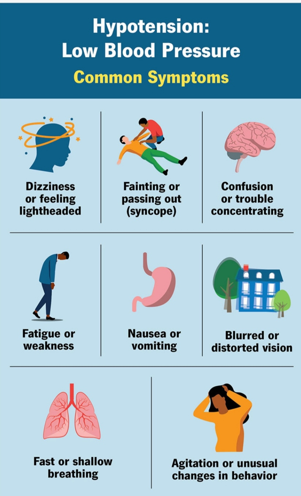
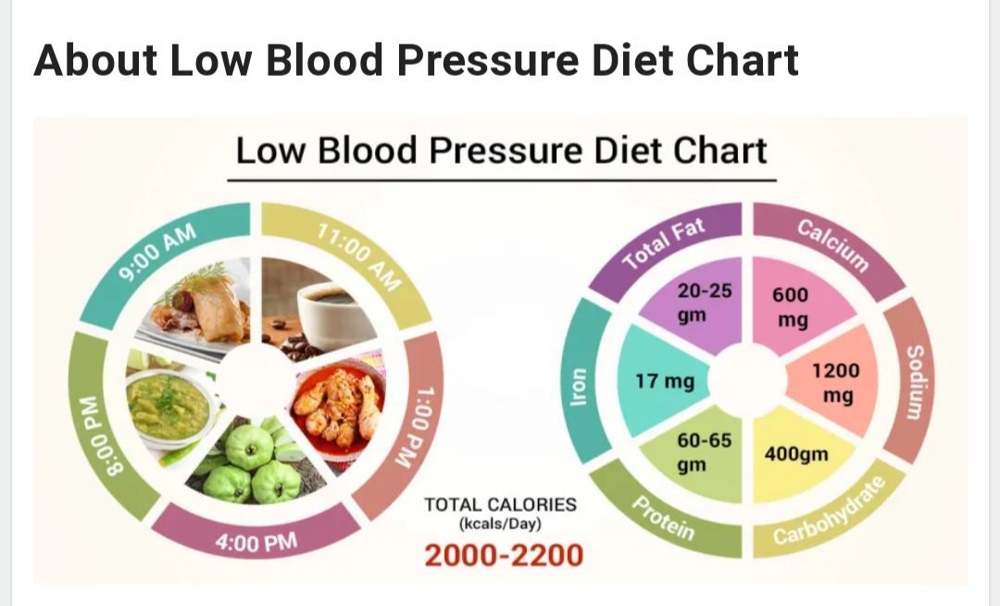

What is Low Blood pressure
Low blood pressure is generally considered a blood pressure reading lower than 90 millimeters of mercury (mm Hg) for the top number (systolic) or 60 mm Hg for the bottom number (diastolic).
What's considered low blood pressure for one person might be OK for someone else. Low blood pressure might cause no noticeable symptoms, or it might cause dizziness and fainting. Sometimes, low blood pressure can be life-threatening.
The causes of low blood pressure range from dehydration to serious medical conditions. It's important to find out what's causing low blood pressure so that it can be treated, if necessary.
Types
Types of low blood pressure include:
- hypotension (postural hypotension).This is a sudden drop in blood pressure when standing from a sitting position or after lying down.
Causes include dehydration, long-term bed rest, pregnancy, certain medical conditions and some medications. This type of low blood pressure is common in older adults.
- Postprandial hypotension. This drop in blood pressure occurs 1 to 2 hours after eating. It's most likely to affect older adults, especially those with high blood pressure or autonomic nervous system diseases such as Parkinson's disease. Eating small, low-carbohydrate meals, drinking more water, and avoiding alcohol might help reduce symptoms.
- mediated hypotension. This is a blood pressure drop that happens after standing for long periods. This type of low blood pressure mostly affects young adults and children. It might result from miscommunication between the heart and the brain.
- system atrophy with orthostatic hypotension. Also called Shy-Drager syndrome, this rare disorder affects the nervous system that controls involuntary functions such as blood pressure, heart rate, breathing and digestion. It's associated with having very high blood pressure while lying down
what causes for Low Blood Pressure
Blood pressure is determined by the amount of blood the heart pumps and the amount of resistance to blood flow in the arteries. A blood pressure measurement is given in millimeters of mercury (mm Hg). It has two numbers:
Systolic pressure. The first (upper) number is the pressure in the arteries when the heart beats.
Diastolic pressure. The second (bottom) number is the pressure in the arteries when the heart rests between beats.
Blood pressure varies throughout the day, depending on:
- Body position
- Breathing
- Food and drink
- Medications
- Physical condition
- Stress
- Time of day
Blood pressure is usually lowest at night and rises sharply on waking. Certain health conditions and use of medications may cause low blood pressure.
what are health risk factors of Low Blood Pressure
Risk factors
Anyone can have low blood pressure (hypotension). Risk factors for hypotension include:
- Age.Drops in blood pressure on standing or after eating occur primarily in adults older than 65. Neurally mediated hypotension primarily affects children and younger adults.
- Medications. Certain medications, including some blood pressure drugs, increase the risk of low blood pressure.
- Certain diseases. Parkinson's disease, diabetes and some heart conditions may increase risk of low blood pressure.

Complications
Potential complications of low blood pressure (hypotension) include:
- Dizziness
-
Weakness
-
Fainting
-
Injury from falls
Severely low blood pressure can reduce the body's oxygen levels, which can lead to heart and brain damage.
Diet plan
What to eat
Eating certain types of food can help you raise your blood pressure. Monitor your symptoms and regularly measure your blood pressure to see what works. Try to consume:
More fluids. Dehydration decreases blood volume, causing blood pressure to drop. Staying hydrated is especially important when exercising.
Foods high in vitamin B-12. Too little vitamin B-12 can lead to a certain type of anemia, which can cause low blood pressure and fatigue. Foods high in B-12 include eggs, fortified cereals, animal meats, and nutritional yeast.
Foods high in folate. Too little folate can also contribute to anemia. Examples of folate-rich foods include asparagus, beans, lentils, citrus fruits, leafy greens, eggs, and liver.
Salt.Salty foods can increase blood pressure. Try eating canned soup, smoked fish, cottage cheese, pickled items, and olives.
Caffeine.Caffeine and caffeinated tea may temporarily spike blood pressure by stimulating the cardiovascular system and boosting your heart rate.
Tips for avoiding low blood pressure
Talk to your healthcare provider or a dietitian about healthy foods to include on your shopping list. There are ways you can modify daily behaviors that may help as well.
Here are a few other changes you can make to your diet to help raise your blood pressure:
Eat small meals more frequently. Large meals may cause more dramatic drops in blood pressure, as your body works harder to digest larger meals.
Drink more water and limit alcohol. Dehydration lowers blood pressure.
In addition to altering your diet, you may also be able to raise your blood pressure by making these lifestyle changes:
-
If you exercise outdoors in extreme heat, take frequent breaks and be sure to increase hydration efforts.
-
Avoiding spending long amounts of time in saunas, hot tubs, and steam rooms which can cause dehydration.
-
Change body positions (such as standing up) slowly.
-
Avoid prolonged bed rest.
-
Wear compression stockings, which help blood move back upward from your legs and feet. You can purchase them online.